AI 혁신, 회사에
얼마나 들어와 있나요?
연세대 MBA 연유연 × 고려대 MBA 광홍마 · 2026-09-19 · 20장 × 15초 자동 전환, 딱 5분.
발표 슬라이드와 발화를 카드 13장으로 다시 묶었습니다.
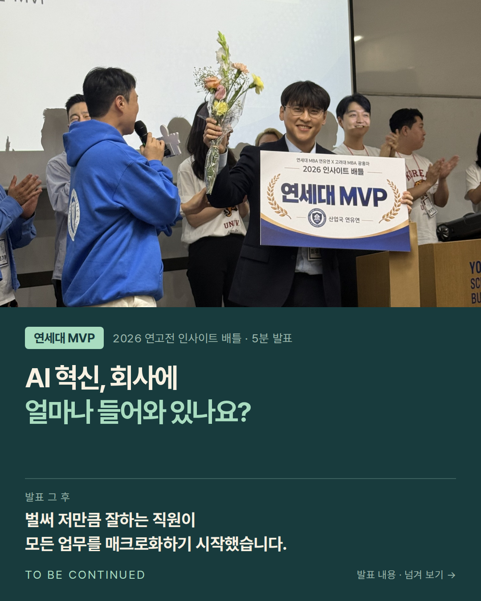
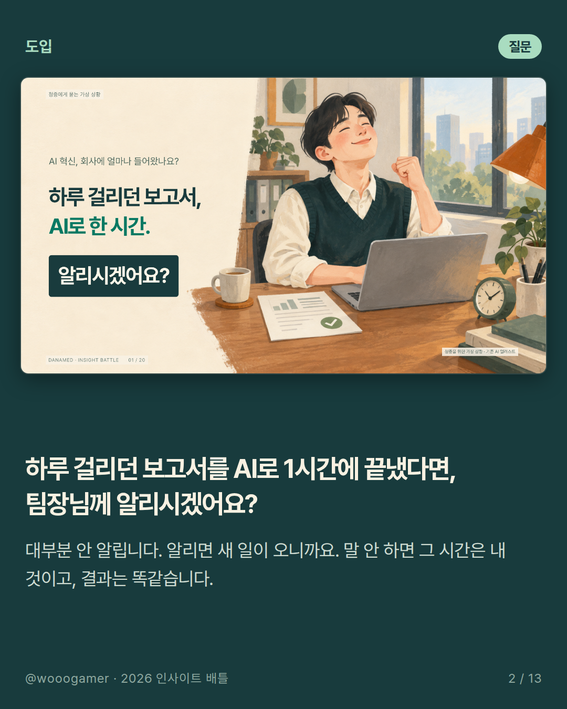
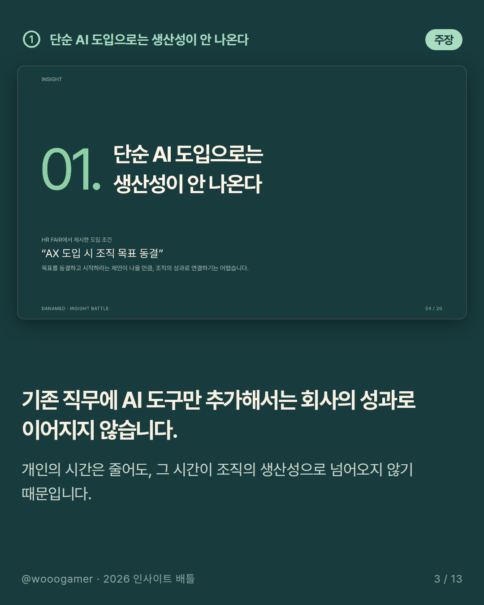
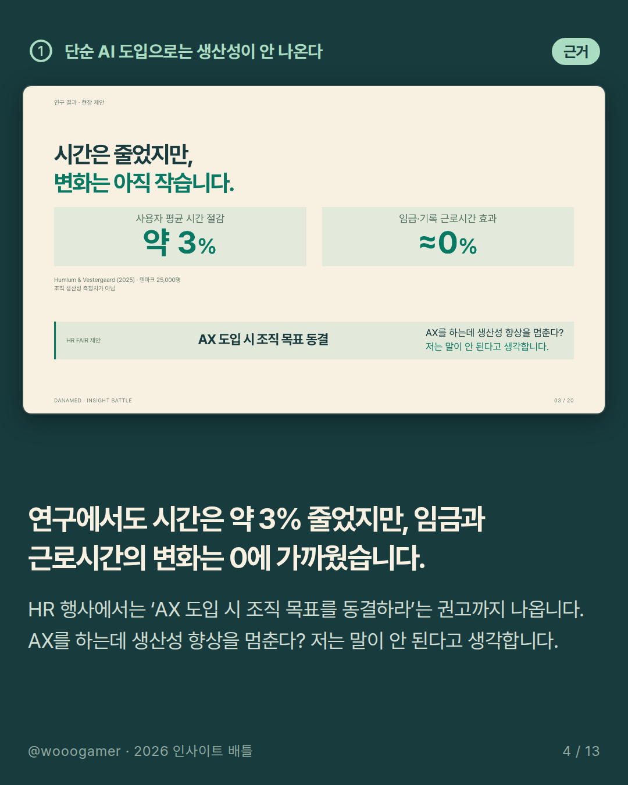
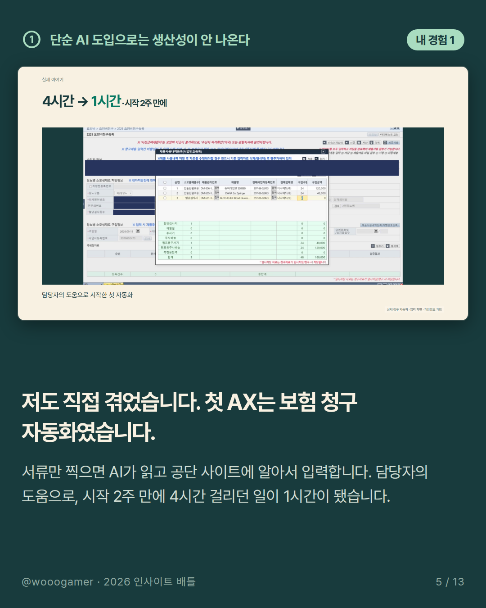
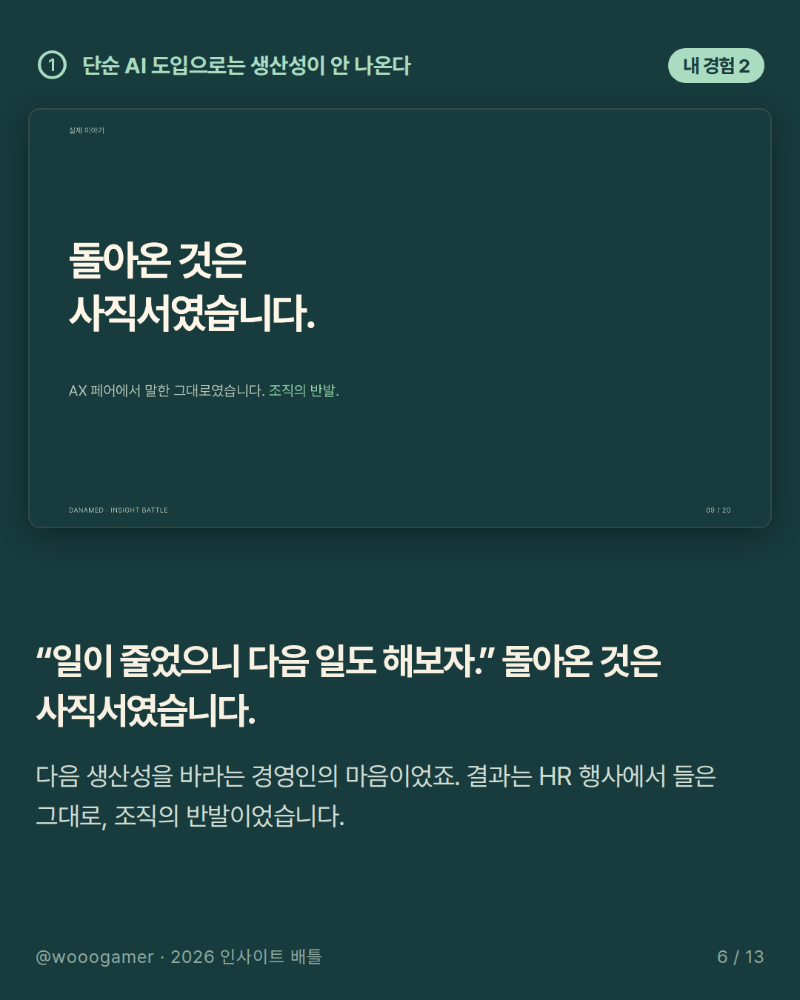
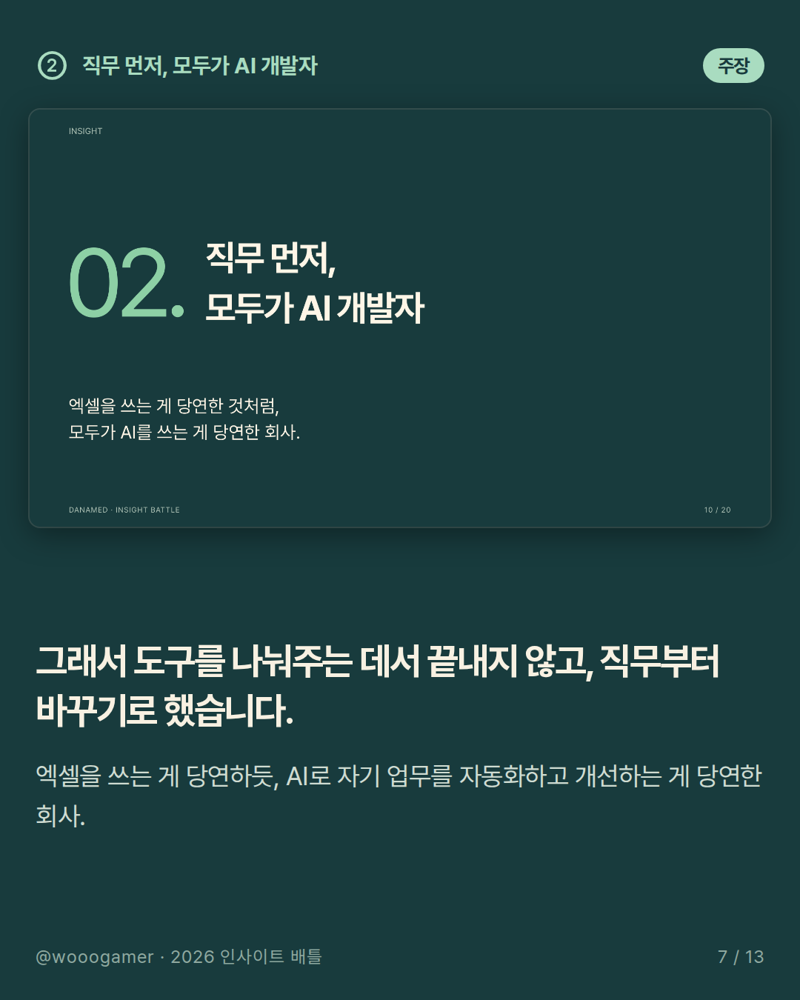
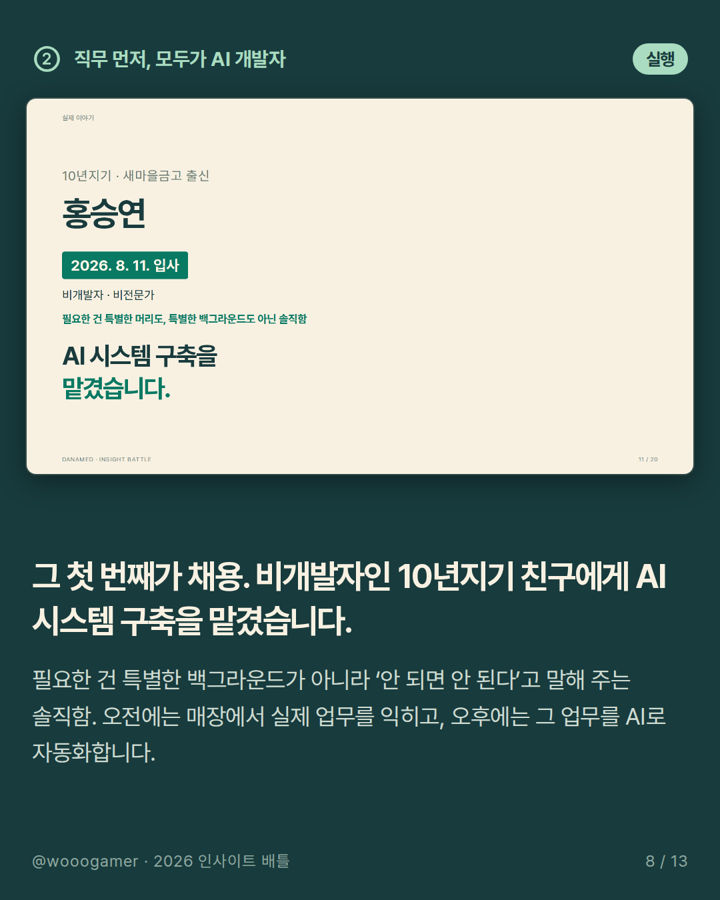
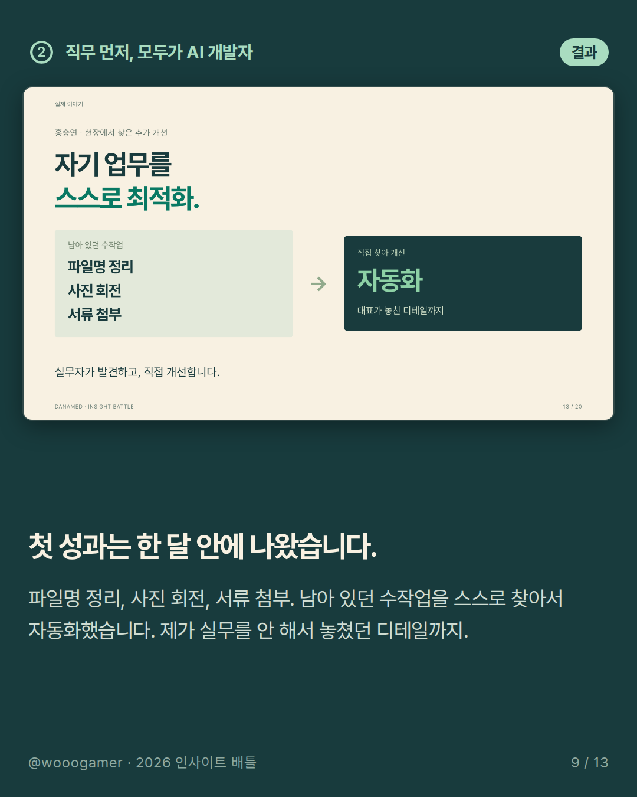
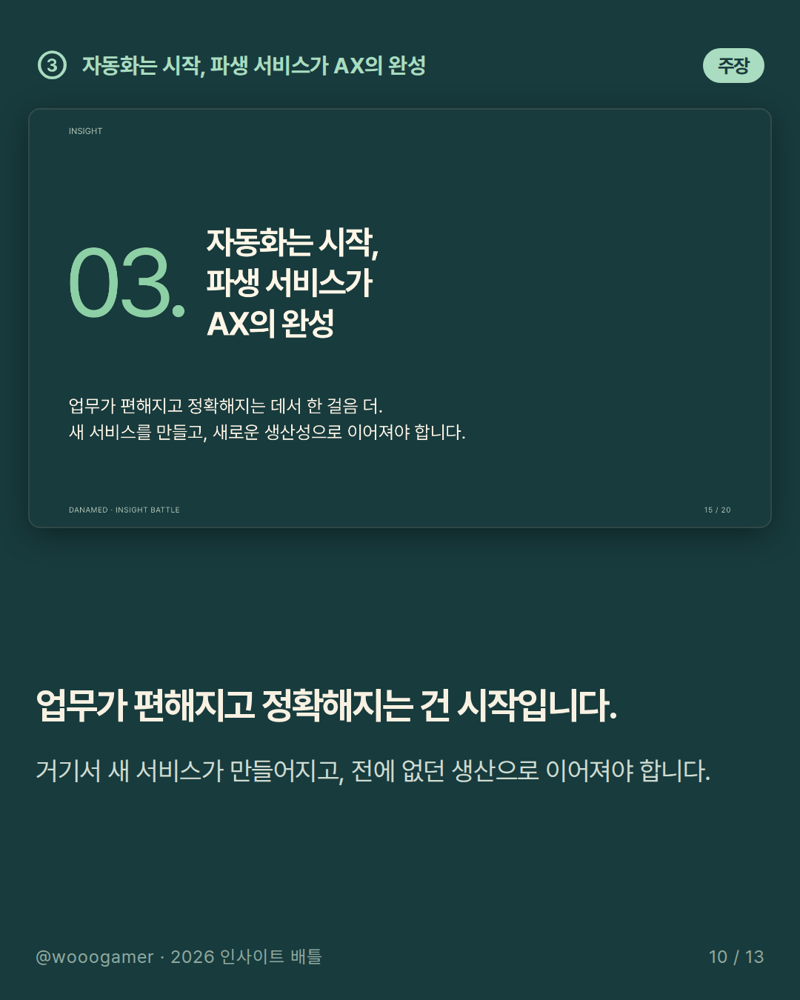
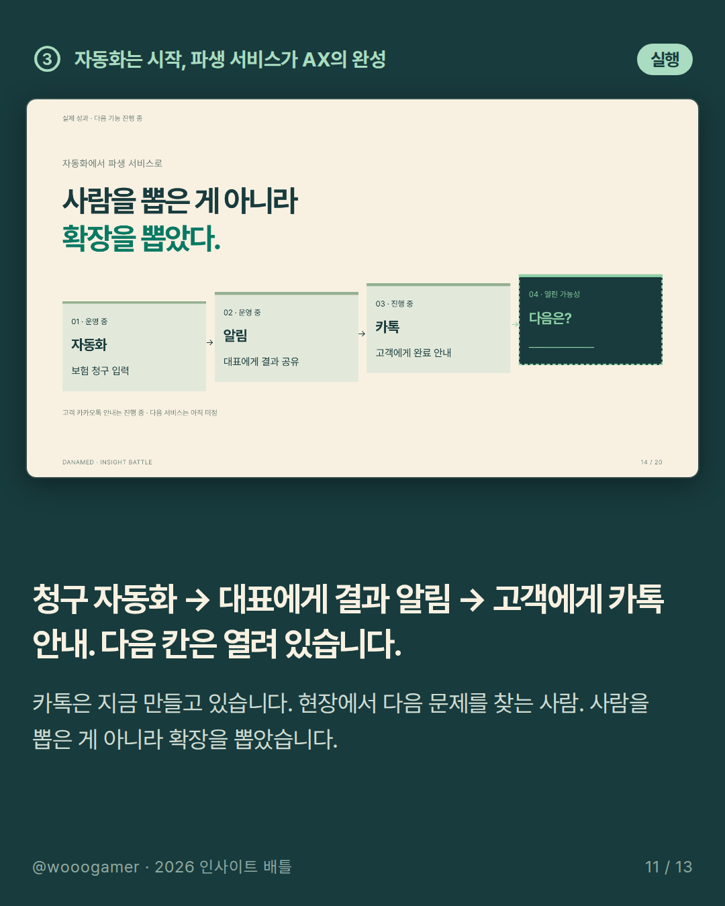
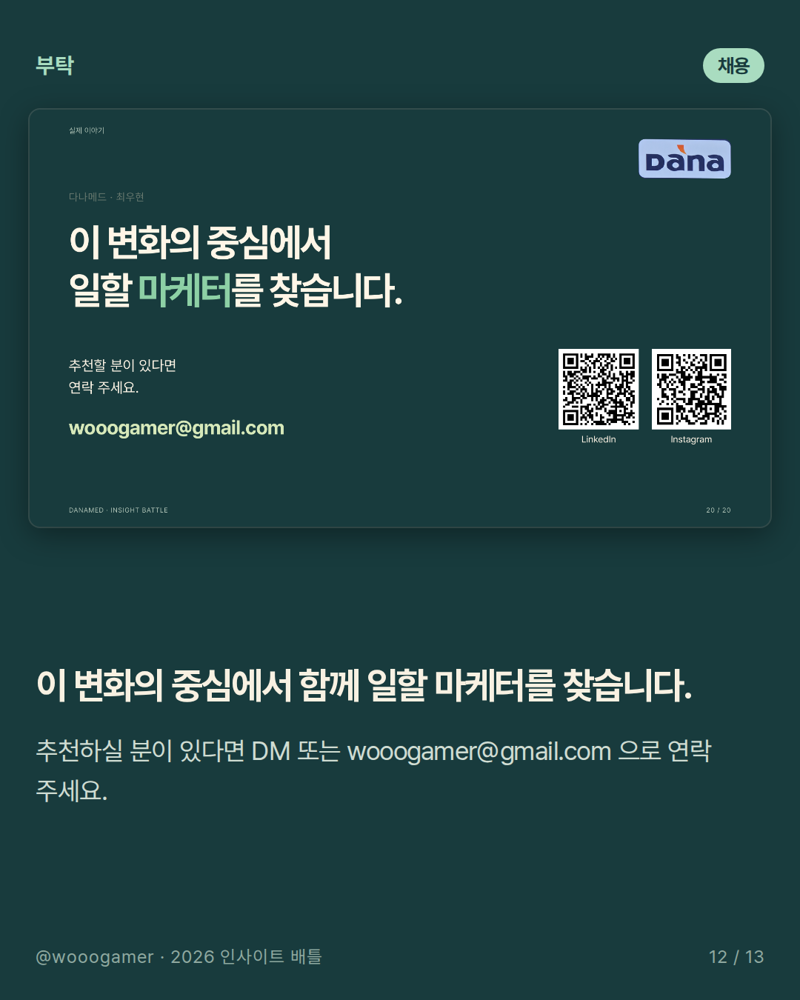
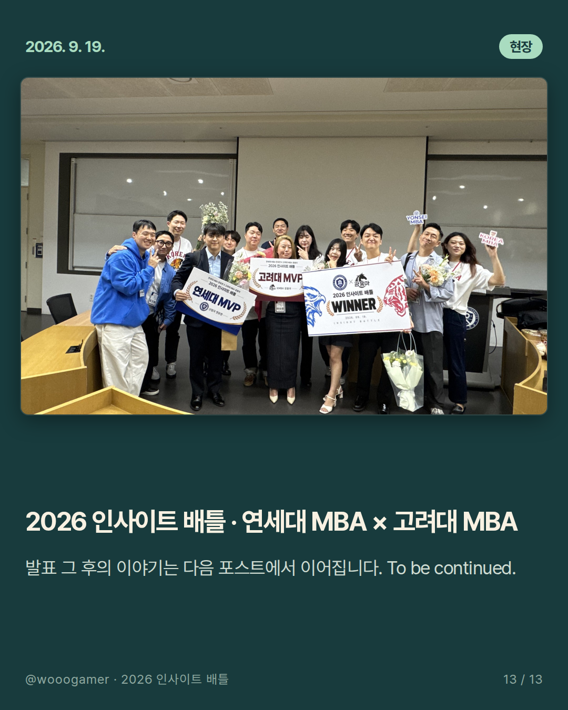
세 가지 이야기
01. 단순 AI 도입으로는 생산성이 안 나온다
하루 걸리던 보고서를 AI로 한 시간에 끝냈다면, 팀장님께 알리시겠어요? 안 알리죠. 알리면 새 일이 오니까요.
02. 직무 먼저, 모두가 AI 개발자
보험 청구를 4시간에서 1시간으로 줄였더니, 돌아온 것은 사직서였습니다. 그래서 도구가 아니라 직무를 다시 짰습니다. 엑셀을 쓰는 게 당연한 것처럼, 모두가 AI를 쓰는 게 당연한 회사.
03. 자동화는 시작, 파생 서비스가 AX의 완성
그리고 발표 그 후 — 8월에 합류한 직원이 벌써 저만큼 합니다. 자기 업무를 전부 매크로화하기 시작했어요. To be continued.
더 보기
발표 덱 설계·발화 리허설 측정·카드 렌더링까지 Claude Code 와 함께 만들었습니다. 리허설은 로컬 STT 로 전사해 장별 초 단위로 맞췄고, 슬라이드는 JSON 소스에서 렌더링해 패치했습니다. · source